Chapter 6. 대역폭 활용(BandWidth Utilization) : 다중화와 스펙트럼 확장(Multiplexing and Spreading)¶
0절. 대역폭 활용
1절. 다중화
1절 - 1. FDM
1절 - 2. WDM
2절. 대역 확산 방식
0절. 대역폭 활용¶
대역폭 활용¶
- 특정 목적을 위해 이용 가능 대역폭을 효율적으로 사용
| 달성 목표 | 사용 요소 |
|---|---|
| 효율 | 다중화(Multiplexing) |
| 프라이버시 & 방해전파 방지 | 스펙트럼 확장(Spectrum Spreading) |
1절. 다중화¶
다중화(Multiplexing)¶
- 단일 링크로 여러 신호를 동시에 전송하는 기술
- n개의 장치가 단일 링크 대역폭 공유
| 상황 예시 | 결과 |
|---|---|
| 링크 대역폭 > 연결된 장치들이 필요한 대역폭 | 여분의 대역폭 낭비 |
| 매체 대역폭 > 두 장치가 필요한 대역폭 | 항상 n개 장치가 단일 링크의 대역폭 공유 가능 |
다중화 시스템 기본 형식¶
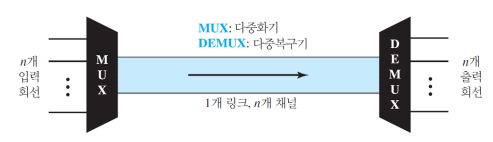
- 단일 데이터 링크를 통해 여러 개의 신호를 동시에 전송하기 위한 기술
| 구성 요소 | 영문 약어 | 영어 | 설명 |
|---|---|---|---|
| 다중화기 | MUX | Multiplexer | 전송 스트림을 단일 스트림으로 결합(MTO : Many To One) |
| 다중복구기 | DEMUX | Demultiplexer | 스트림을 각각의 요소로 분리(OTM : One To Many) 전송 스트림을 해당 수신장치에 전달 |
| 링크 | . | Link | 물리적인 경로 |
| 채널 | . | Channel | 한 쌍의 장치 간 전송을 위한 하나의 경로 |
다중화 범주¶
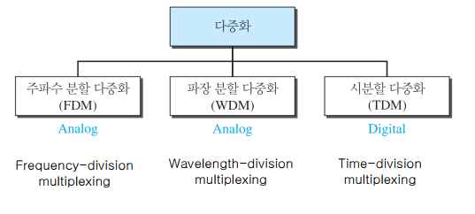
1절 - 1. FDM¶
주파수 분할 다중화(FDM : Frequency Division Multiplexing)¶
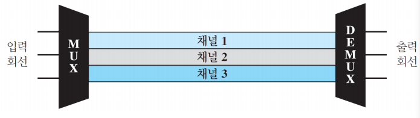
- 신호들을 합성하는 아날로그 다중화 기술
- 전송되어야 하는 신호들의 대역폭 합보다 링크의 대역폭이 클 때 적용 가능
- 전송될 신호는 서로 다른 주파수의 Carrier Frequency로 변환
- 변환된 신호들을 합쳐 하나의 Composite Signal로 만든 후 전송
- 신호가 겹치지 않도록 보호 대역(Guard Band)만큼 간격 필요
다중화 과정¶
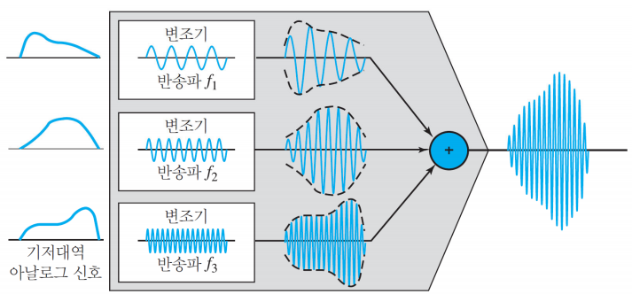
- 각 소스는 유사한 주파수 범위의 신호 생성
- 신호들은 다중화기 내부에서 각기 서로 다른 반송 주파수로 변조(f1, f2, f3)
- 생성된 변조 신호들은 하나의 복합 신호로 결합
- 신호 수용 가능한 대역폭을 가진 매체 링크로 전송
다중화 복구 과정(Demultiplexing)¶
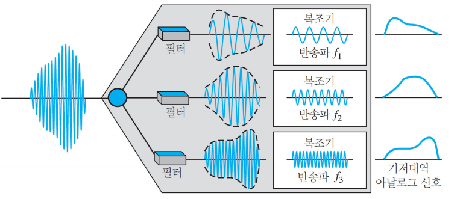
- 필터를 사용해 다중화된 신호를 구성요소의 신호들로부터 분리
- 개별적 신호를 넘겨받은 복조기는 반송파로부터 신호만 분리 후 수신 장치로 전달
아날로그 반송파 구조¶
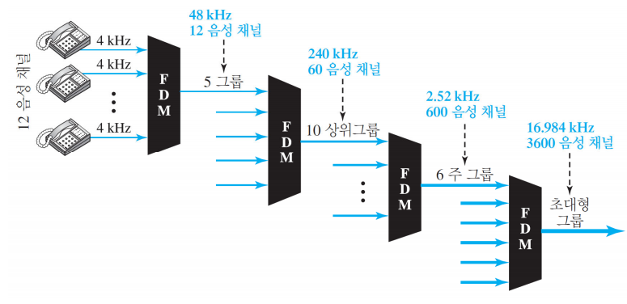
- 전화 회사에서 사용하는 방식
- 낮은 대역폭 회선들을 높은 대역폭 회선들로 다중화
- 아날로그 회선에서 FDM 사용
FDM 응용¶
| 종류 | 응용 형태 |
|---|---|
| 라디오 | AM : 530 ~ 1,700 kHz, 방송국 당 10kHz FM : 88 ~ 108 MHz, 방송국 당 200kHz |
| TV | 54 MHz ~ 88 MHz(ch.2 - 6), 174 MHz ~ 216 MHz(ch.7 - 13) 채널 당 6 MHz |
| 1 세대 이동전화 | FDM의 BW : 10 * BW / 음성 신호의 BW : 3 kHz 사용자마다 60 kHz 수신 : 30 kHz / 발신 : 30 kHz |
1절 - 2. WDM¶
파장 분할 다중화(WDM : Wavelength Division Multiplexing)¶
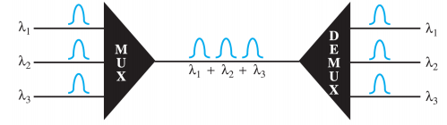
- 광섬유 신호 조합을 위한 아날로그 다중화 기법
- 광 == 빛 채널 이용 : 빛으로 된 신호 전송
- 광섬유
- 고속 데이터 전송률 이용을 위해 설계
- 데이터 전송률 : 금속 전송 매체에 비해 높음
- Multiple light source 사용 => 하나의 signal light로 혼합(prism 사용)
- 개념적으로 FDM과 동일
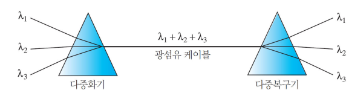
- 다중 빛 소스를 단일 빛으로 결합
- 단일 빛은 다중 빛 소스로 분리
1절 - 3. TDM¶
동시 시분할 다중화(TDM : Time Division Multiplexing)¶
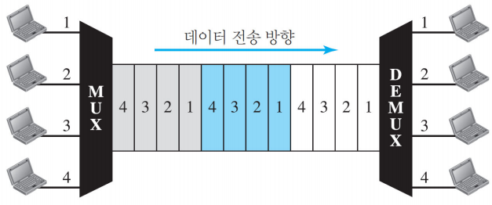
- 여러 개의 저속 채널을 하나의 고속 채널로 조합하는 디지털 다중화 기법
- 동기식 TDM
- 통계식 시분할 다중화
- 높은 링크 대역폭을 여러 연결이 공유하는 디지털 처리 방식
- 다른 발신지로부터 디지털 데이터를 하나의 시간 공유 링크로 통합
동기식 TDM¶
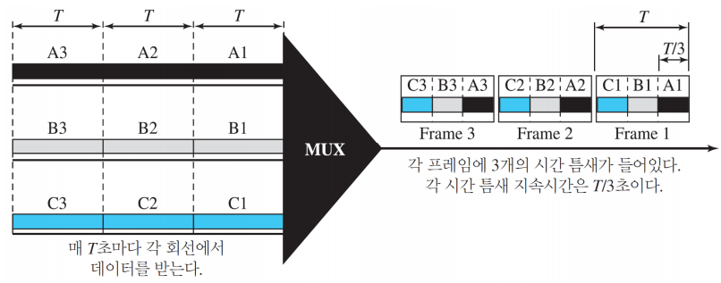
- 시간 틈새(time-slot)와 프레임(frame)
- Time slot
- 여러 개를 Frame 단위로 group : 하나의 Frame 형성
- duration : T/n
- n 개의 input : 최소한 n time slot으로 frame 구성
끼워넣기(Interleaving)¶
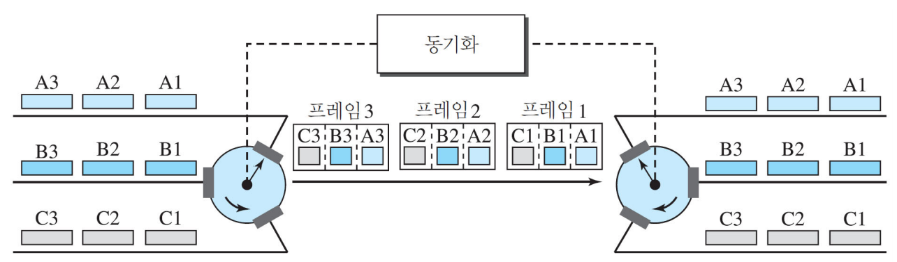
- 하나는 다중화기 쪽에서 다른 하나는 다중화 복구 장치 쪽에서 매우 빠르게 도는 교환기
- 일정한 속도로 회전하는 switch와 동일한 개념
- 교환기가 연결 앞에서 열리고 연결이 경로에 한 단위를 전송할 기회를 획득하는 과정
- 일정한 순서, 일정한 rate로 데이터 전송
- 비어있는 time slot 발생
빈 틈새(Empty Slots)¶
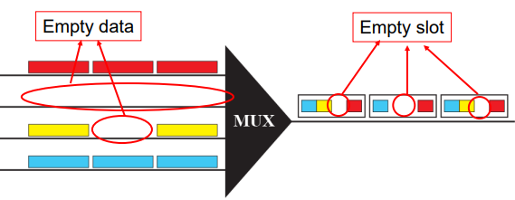
- 동기식 TDM은 효율적 X
- 발신자가 전송할 데이터가 없으면 빈 틈새 생성
데이터 전송률 관리 : 입력 측 데이터율이 상이한 경우 해결 방법¶
1. 다단계 다중화(Multilevel Multiplexing)¶
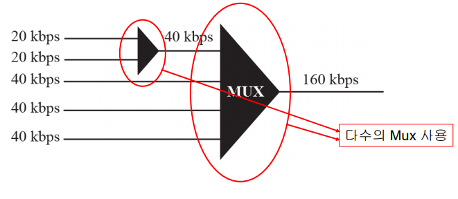
- 입력 데이터 전송률이 다른 값들에 비해 정수 배만큼 빠를 경우 사용하는 기술
2. 다중-틈새 할당(Multiple-Slot Allocation)¶
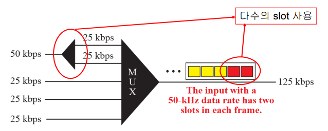
- 단일 입력 회선에 1개보다 많은 틈새 할당
3. 펄스 채워 넣기(Pulse Stuffing)¶
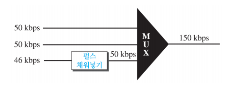
- 가장 높은 데이터율의 입력 회선을 주 데이터율로 설정
- 낮은 데이터율의 입력 회선에 공 비트 끼워넣기
- 비트 패딩
- 비트 채워 넣기
프레임 동기화(Frame Synchronization)¶
- 다중기와 다중화 복구 장치 사이 동기화
프레임 구성 비트(Framing Bits)¶
- 1개 이상의 비트를 각 프레임 앞에 끼워 넣기
- Mux와 Demux 간 Synchronization 중요
- 모든 프레임에서 Time Slot Order 일치
- 적은 양의 추가 정보만 필요
- 각 프레임의 시작점에서 필요한 Synchronization Bits
- 1 bit/frame(0과 1 반복 : 01010101...)
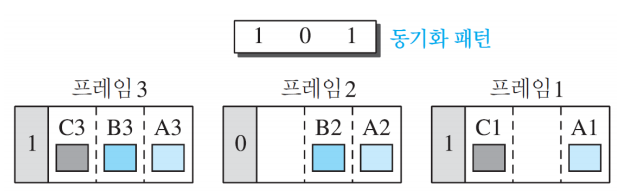
디지털 신호 서비스¶
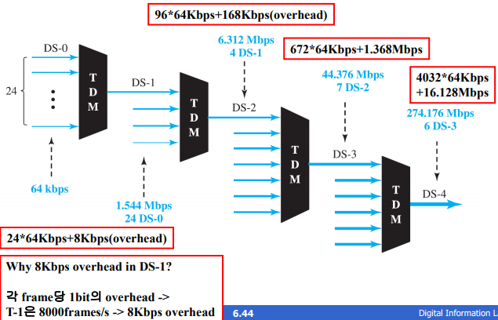
| 서비스 | 회선 | 전송률(Mbps) | 음성 채널 |
|---|---|---|---|
| DS-1 | T-1 | 1.544 | 24 |
| DS-2 | T-2 | 6.312 | 96 |
| DS-3 | T-3 | 44.736 | 672 |
| DS-4 | T-4 | 274.176 | 4032 |
- 디지털 신호 제공을 위해 전화회사에서 T line(T-1 ~ T-4) 사용
- T line
- 디지털 라인이지만 아날로그 신호 사용 가능
- Analog Signal => Sampling => Time Division Multiplexed
아날로그 전송용 T 회선¶
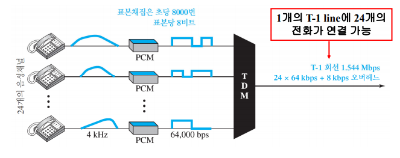
- 디지털 데이터, 음성, 비디오 신호 등의 전송을 위해 설계
- 아날로그 신호 표본 채집 후 시분할 다중화된다면 아날로그 전송(일반 전화통화)을 위해 사용
T-1 프레임 구조¶
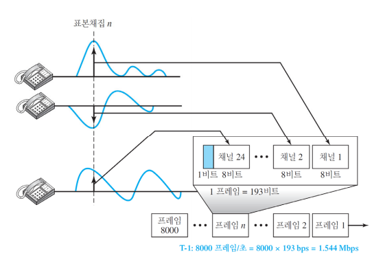
E 회선 전송 속도¶
- 유럽에서 사용 : E 라인
| 회선 | 전송률(Mbps) | 음성 채널 |
|---|---|---|
| E-1 | 2.048 | 30 |
| E-2 | 8.448 | 120 |
| E-3 | 34.368 | 480 |
| E-4 | 139.264 | 1920 |
동기식 시분할 다중화(Synchronous TDM)¶
- 2nd Generation Cellular Phone 회사들이 Synchronous TDM을 사용
- 각 밴드에 6명의 사용자 수용 가능
- 30 KHz * 6명 time slot
- 빈 슬롯 존재 가능성 => 효율 낮음
통계식 시분할 다중화(Statistical TDM)¶
- 슬롯 수가 input보다 적음
- mux에서 input의 데이터 존재 여부 조사 후 없을 경우 다음 input에 데이터 삽입
| 특징 | 설명 |
|---|---|
| Addressing | N개의 입력라인에 대해서 최소 n bit의 address 필요(\(n = log_2N\) ) |
| Slot Size | 데이터 크기와 어드레스 크기 비율의 합리성(데이터 크기 > 어드레스 크기) |
| No Synchronization Bit | 동기화 비트 없음 |
| BandWidth | 통계 값에 의해 link 용량 결정(link 용량 < 각 채널 용량 합) |
- 입력 회선이 전송할 데이터가 존재하는 경우에만 출력 프레임 틈새 할당
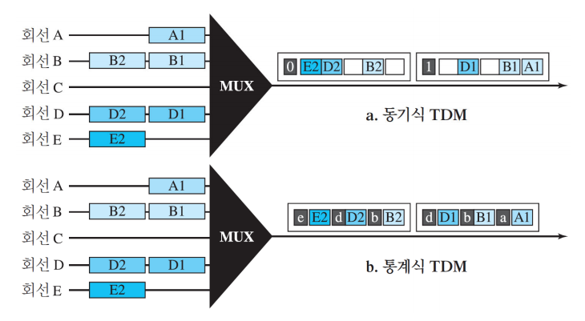
대역 확산 방식(SS : Spread Spectrum)¶
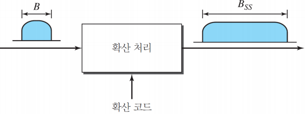
- 서로 다른 발신지에서 오는 신호를 합해 더 큰 대역으로 변환
- 무선 응용(LAN & WAN)을 위한 설계
- 주 목적 : 도청 방지
- 확산 대역 기술에 여분의 정보 추가
- 확산 처리(Spreading Process) : 원래 신호와 독립적 진행
| 종류 | 영문 약어 | 영문 |
|---|---|---|
| 주파수 도약 대역 확산 | FHSS | Frequency Hopping Spread Spectrum |
| 직접 순열 대역 확산 | DSSS | Direct Sequence Spread Spectrum |
주파수 도약 대역 확산(FHSS : Frequency Hopping Spread Spectrum)¶
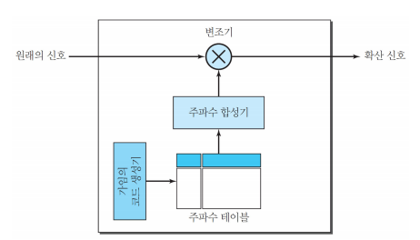
- 발신지 신호로 변조된 M 개의 서로 다른 반송파(원 신호 변조) 사용
- 어느 순간에는 신호가 하나의 carrier 주파수로 변조되고 다른 순간에는 신호가 다른 carrier 주파수로 변조됨
- 긴 시간상에서 M 개 주파수로 변조
- \(B_{FHSS} >> B\)
- Pseudorandom noise (PN) 또는 pseudorandom code generator
- 매 도약 구간 \(T_h\)에서 k-bit 패턴 생성
- \(M = 2^k\)
- M 개 패턴 순서 랜덤 결정
- 패턴에 따라 주파수 결정
- M 개의 패턴이 전부 순환하면 처음부터 반복
- Bandwidth Sharing
- 도약 주파수가 M 개이면 M 개의 채널을 하나의 BSS bandwidth로 사용
- 각 도약 구간에 하나의 주파수를 사용 시 M-1 개의 주파수가 남고 이를 M-1 개의 다른 station이 사용 가능
FHSS 예시¶
- 주파수 선택
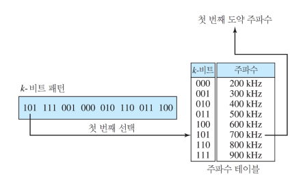
- FHSS 사이클
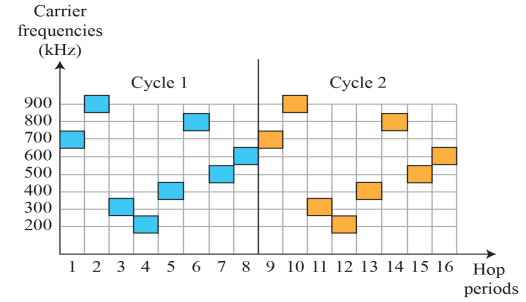
- 대역폭 공유
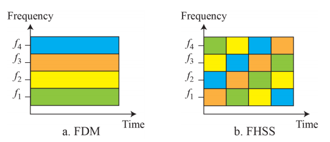
직접 순열 대역 확산(DSSS : Direct Sequence Spread Spectrum)¶
- 각 데이터 비트를 확산 코드로 n 비트 대체
- 비트에 칩(Chip)인 n 비트 코드 지정
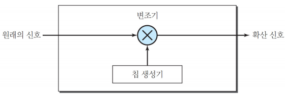
DSSS 예시¶
- 무선 LAN에 사용되는 유명한 바커 순열
- ex) n == 11
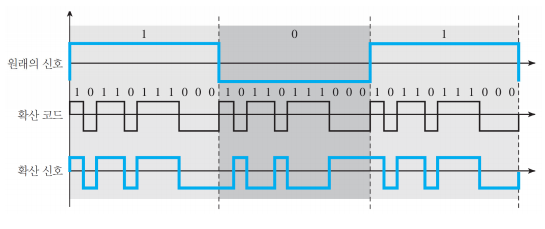